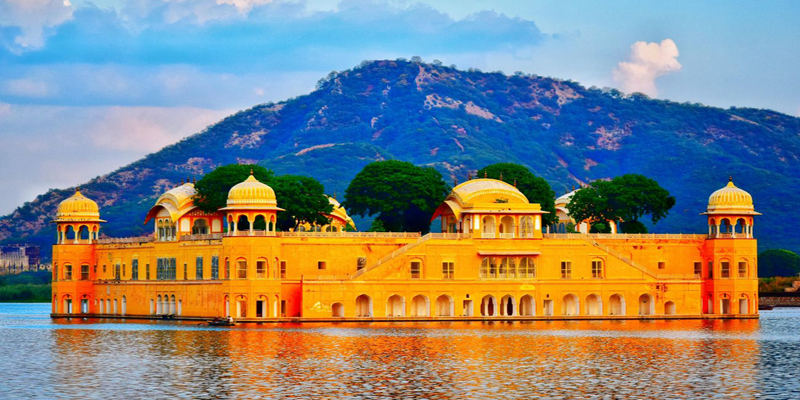
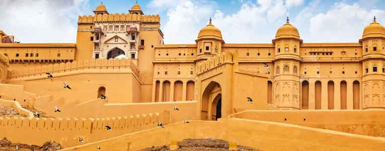

The city of palaces and forts, interspersed with historical monuments and gardens that testify the grandeur of the Rajput kings, Jaipur is the gateway to the royal heritage of India. Also called Pink City, the capital of Rajasthan, remains suspended in time, with its heritage preserved in the overwhelming Hawa Mahal that gazes down at the bustling streets of Johari Bazaar..

The Jal Mahal literally means the Water Palace, but when it was built, Maharaja Madho Singh I
did not intend to use it as a palace. Instead, it was supposed to be a hunting lodge for the
king and his entourage during their duck hunting trips. The palace stands in the middle of the
Man Sagar Lake in Jaipur city, and is a famous spot till date for sightseeing
 Just 11 km outside Jaipur, lies the magnificent Amber Fort (Amer Fort), sitting atop a hill, and rising like a sentinel guarding the city. Commissioned in 1592 by Maharaja Man Singh I, the fort is a fine blend of Rajput and Mughal architectural styles, and boasts a grand palace, temples and several ornate gates. Built entirely of red sandstone with white marble work, the UNESCO World Heritage Site is a picture of opulence and grandeur, set against a stark desert backdrop and rolling hills.
 While visiting the majestic Nahargarh Fort, one should rope in a visit
to the fantastic Jaipur Wax Museum. Not unlike the renowned Madame Tussauds, this
museum hosts respected and honoured faces from the fields of sports, arts, cinema, history and royalty.
The wax and silicon statues seem almost life-like owing to the skill and intricacy with which they have been crafted. The statues have been sculpted by well-known sculptor Susanta Ray and are housed in the Royal Darbar and Hall of Icons sections of the Nahargarh Fort. A special section has been set apart for the royal
people or the Maharajas and Maharanis of Jaipur and Rajasthan. .
While visiting the majestic Nahargarh Fort, one should rope in a visit
to the fantastic Jaipur Wax Museum. Not unlike the renowned Madame Tussauds, this
museum hosts respected and honoured faces from the fields of sports, arts, cinema, history and royalty.
The wax and silicon statues seem almost life-like owing to the skill and intricacy with which they have been crafted. The statues have been sculpted by well-known sculptor Susanta Ray and are housed in the Royal Darbar and Hall of Icons sections of the Nahargarh Fort. A special section has been set apart for the royal
people or the Maharajas and Maharanis of Jaipur and Rajasthan. .